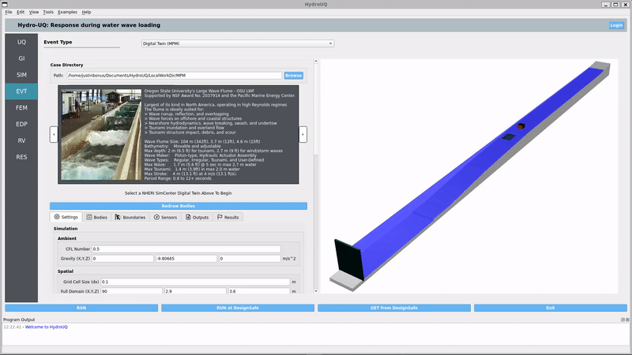

User Guide
The HydroUQ app, as will be discussed in Software Architecture, is a hazard event application. In addition to the hazard event, the workflow also includes other aspects, like UQ and FEM engine. Each of these workflow elements can involve multiple different backend applications. Once the Hydro-UQ app is started, the user is presented with the user interface shown in primaryGUI. In this UI, the user selects the applications to run in a workflow, inputs the necessary parameters for each of these applications, starts the workflow either locally or remotely, and finally views the simulation results. The main window of the UI is divided into several separate areas. Each of these areas is discussed in the upcoming sections.

The Hydro-UQ app user interface, with the EVT panel selected. The numerical solver shown is the MPM solver.

The Hydro-UQ app user interface, with the EVT panel selected and the legacy HydroUQ v1.0 GUi
1. Login button:
The Login button is at the top right of the user interface. Before the user can launch any jobs on DesignSafe, they must first log in to DesignSafe using their DesignSafe login and password. Pressing the login button will open up the login window for users to enter this information. Users can register for an account on the DesignSafe-CI website.
2. Action buttons:
The action buttons consist of several possible action buttons. This includes:
RUN: This button is used to set up and run the jobs locally on the user’s computer. However, note that the Hydro-UQ application does not facilitate local runs.
RUN at DesignSafe: Process the information provided by the user in the UI, and send this information to DesignSafe. The simulation will be run on the TACC’s supercomputer Frontera, and results will be stored in the user’s DesignSafe jobs folder.
GET from DesignSafe: Obtain the list of jobs for the user from DesignSafe and select a job to download from that list.
Exit: Exit the application.
3. Input panel selection:
The ribbon on the left side provides the user with a selection of buttons to choose from (e.g., UQ, GI, SIM, EVT, RV, FEM, EDP, RES). Selecting any of these buttons will change what is displayed in the central input panel. Except for the RV panel, each panel will present the user with an option for which application to choose for that part of the workflow and then present the users for inputs for that application. Of particular interest here is the EVT, where all flow parameters are assigned. At present, the other inputs have not been integrated into the Hydro-UQ application. More information will be provided as and when the other inputs are integrated.